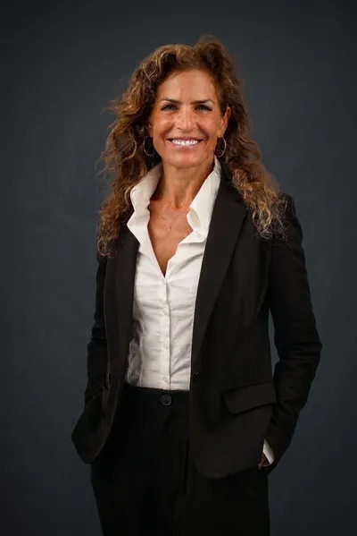

תיק מס׳ 53–54–57 יעל דרוקמן עריכת דין · גישור · ביטוח 010203040506070809101112 מסמכים משפטיים הם לא ניירת. הם הדרך לדאוג לאחרים גם כשלא נהיה שם להסביר. חותמתפגישה  עו״ד יעל דרוקמן עריכת דיןייפוי כוח · צוואות · הסכמים ביטוח ופיננסיםפנסיה · בריאות · חיים גישורמשפחה · גירושין · דורות